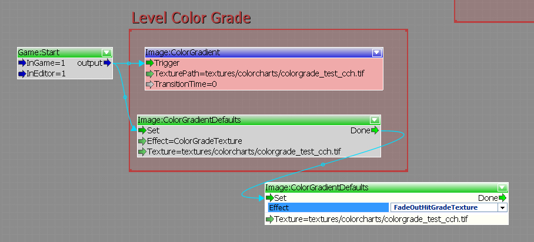

Применение LUT в редакторе
Есть несколько способов применить LUT в редакторе. К сожалению, для этого нет интеграции с UI, поэтому для предварительного просмотра вам необходимо использовать консоль.
Использование консоли
Убедитесь, что цветокоррекция активна по умолчанию (так и должно быть) с помощью этого CVar:r_ColorGrading 1
Загрузите новую цветовую диаграмму/LUT, используя эту переменную: r_ColorGradingChartImage Текстуры/Цветовые схемы/colorgrade_cch.tif
Обратите внимание, что вам необходимо указать полный путь с корнем GameSDK.
Использование Flowgraph (применение LUT во время игры)
Откройте блок-граф и добавьте узел:Изображение: ColorGradient
Для одиночных миссий вам также потребуется добавить несколько узлов, чтобы установить параметры цветовой градации «по умолчанию». Это связано с тем, что UI вызывает определенные LUT цветовой градации, когда игрок получает удар или когда игрок использует Фокус.
Узел называется: Изображение: ColorGradientDefaults
- Вам нужно будет установить для входа «Эффект» значение «ColorGradeTexture», чтобы установить этот LUT в качестве применяемого по умолчанию LUT.
- В зависимости от уровня и того, как это выглядит в игровом процессе, когда вы получаете удар или используете фокус, вам также может потребоваться применить этот LUT к эффектам с именами "FadeOutHitGradeTexture" и "FocusStartGradeTexture".
Во входных данных «TexturePath» добавьте полный путь к LUT (как в примере с консолью выше).
Запустите все это по GameStart или чему-то еще.
Блок-граф должен выглядеть примерно так:

Теперь, когда вы заходите в игру (или запускаете ее), оценка должна быть включена.